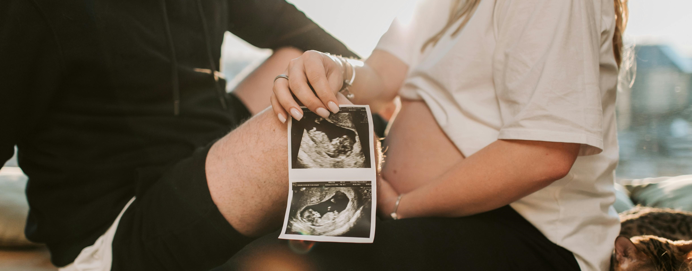

A gravidez de um bebê com Síndrome de Down é como a de qualquer outro bebê. No entanto, são necessários mais exames para acompanhar a saúde e o desenvolvimento do bebê, que pode ser um pouco menor e pesar menos do que o esperado para a idade gestacional. No caso do Autismo só pode ser diagnosticado nos primeiros anos de vida.

O Processo
Da
Gravidez
Descoberta
Muitos casais descobrem que terão um filho com Síndrome de Down durante a gravidez. Embora a notícia possa ser impactante no começo, ela pode ajudar os pais a se prepararem melhor para a chegada do bebê. É importante entender que não há "culpados" pela síndrome de Down, pois ela não é uma doença, mas sim uma condição que a pessoa tem. A criança pode ser diferente da que os pais esperavam, mas isso não significa que ela não poderá ter uma vida plena e feliz.
Os cuidados durante a gravidez são os mesmos para qualquer criança. No entanto, como bebês com Síndrome de Down podem ter problemas cardíacos, é essencial conversar com o médico que acompanha a gestação. É recomendável pedir uma avaliação do coração do bebê para saber se será necessária alguma intervenção cirúrgica logo após o nascimento.

Diagnóstico
O diagnóstico de Síndrome de Down pode ser feito durante a gravidez por meio de exames específicos, como a translucência nucal, a cordocentese e a amniocentese. Esses exames não são necessários para todas as gestantes, mas geralmente são recomendados pelo obstetra quando a mãe tem mais de 35 anos ou quando a mulher já tem a síndrome.
Além disso, esses exames podem ser solicitados se a mulher já teve um filho com Síndrome de Down, se o obstetra notar alguma alteração no ultrassom que possa indicar a síndrome, ou se o pai do bebê tiver alguma mutação relacionada ao cromossomo 21.
Exames durante a gravidez
Alguns exames podem ser feitos durante a gravidez para avaliar se o bebê tem Síndrome de Down, ajudando os pais a se prepararem. Os principais exames são:
Coleta de vilosidades coriônicas
Feita na 9ª semana de gestação, retira uma pequena amostra da placenta, que tem o mesmo material genético do bebê.
Perfil bioquímico materno
Realizado entre a 10ª e 14ª semana, mede uma proteína e o hormônio beta hCG, produzidos pela placenta e pelo bebê.
Translucência nucal
Feito na 12ª semana, mede o tamanho da nuca do bebê.
Amniocentese
Realizada entre a 13ª e 16ª semana, retira uma amostra do líquido amniótico.
Cordocentese
Feita a partir da 18ª semana, retira sangue do bebê pelo cordão umbilical.
Esses exames ajudam o médico a avaliar o desenvolvimento do bebê e identificar se há alterações no cromossomo 21, que está relacionado à Síndrome de Down.
Aborto
Um estudo conduzido com 44 gestantes submetidas a métodos de diagnóstico pré-natal citogenético revelou um caso de síndrome de Down. Neste caso específico, a gravidez foi interrompida por decisão familiar. Os autores do estudo observaram que, apesar de a maioria das participantes ser de tradição católica, a grande maioria delas manifestou a intenção de realizar um aborto caso o diagnóstico confirmasse a presença da síndrome de Down.
Esses resultados, embora oriundos de um grupo específico que buscava informações sobre possíveis alterações genéticas durante a gestação, podem refletir a complexidade do tema e o impacto social associado à presença de uma pessoa com deficiência na família. Esse fenômeno destaca a necessidade de um diálogo mais amplo e sensível sobre as implicações sociais e emocionais de tais diagnósticos, além de ressaltar a importância do suporte psicológico e social para as famílias que enfrentam essas situações. A reflexão sobre as escolhas feitas por essas famílias pode contribuir para uma melhor compreensão das percepções e atitudes em relação às deficiências e à tomada de decisão durante a gestação.